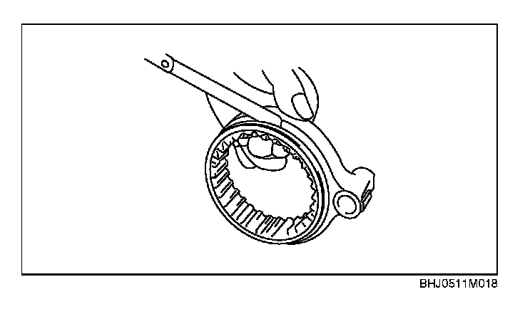

1ST/2ND, 3RD/4TH and 5TH/Reverse Shift Fork Inspection
1st/2nd, 3rd/4th and 5th/reverse Shift Fork Inspection
1. Measure the clearance between the hub sleeve and shift fork.
Clearance between the hub sleeve and shift fork
Standard clearance: 0.2 - 0.3 mm (0.008 - 0.012 in)
Maximum: 0.5 mm (0.020 in)
^ If not as specified, replace the hub sleeve and shift fork.